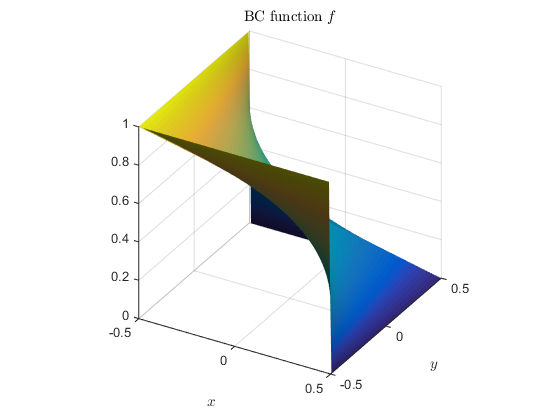
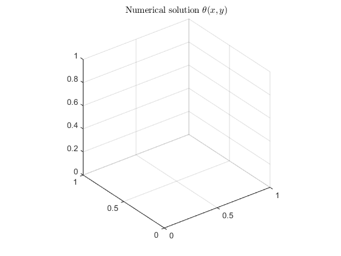
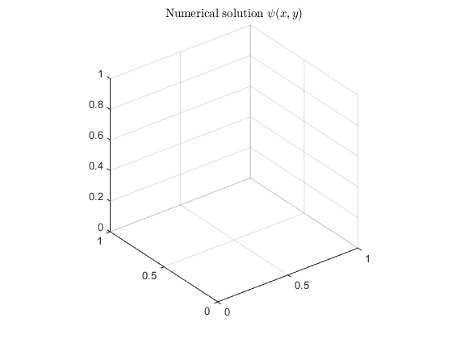

Contents
clear all
close all
clc
addpath 'core'
addpath 'core_rfm'
addpath 'core_basis'
L = 1;
H = 1;
Pr = 1;
Gr = 10^3;
Ra = Pr*Gr;
eps01 = 1e-6;
nx = 2^7;
ny = nx;
dx = L / (nx-1);
dy = H / (ny-1);
tx = -0.5*L:dx:0.5*L;
ty = -0.5*H:dy:0.5*H;
[x, y] = meshgrid(tx, ty);
theta = 0*x;
psi = 0*x;
dzeta = 0*x;
u = 0*x;
v = 0*x;
nf = 2;
hf = 1 / (nf + 1);
K = (nf+2)^2;
Th = zeros(nx,ny);
Ps = zeros(nx,ny);
Dz = zeros(nx,ny);
Th_new = Th;
Ps_new = Ps;
Dz_new = Dz;
ThA = zeros(K,K);
PsA = zeros(K,K);
DzA = zeros(K,K);
ThB = zeros(1,K);
PsB = zeros(1,K);
DzB = zeros(1,K);
BfTh = zeros(K,nx,ny);
BfPs = zeros(K,nx,ny);
BfDz = zeros(K,nx,ny);
ind = 1:K;
f03 = x + 0.5;
f04 = y + 0.5*H/L;
f05 = 0.5 - x;
f06 = 0.5*H/L - y;
omH = r_con(f03, f04);
omC = r_con(f05, f06);
omH_norm = omH;
omC_norm = omC;
omH_norm(omH<0) = 0;
omC_norm(omC<0) = 0;
fL = omC_norm ./ (omH_norm + omC_norm);
omega = r_con(0.25 - x.^2, 0.25*H/L - y.^2);
omega(omega<0) = 0;
omega = tanh(30*omega);
figure(1),
surf(x, y, fL); view(30, 30);
daspect([1,1,1])
shading interp
light
lighting phong
xlabel('$x$','Interpreter','latex')
ylabel('$y$','Interpreter','latex')
title('BC function $f$','Interpreter','latex')
ind_mat = mat_index(nf);
for k = ind
i = ind_mat(2,k);
j = ind_mat(3,k);
BfTh(k,:,:) = omega.*bdspln_function(i-1, x, hf, nf).*bdspln_function(j-1, y, hf, nf);
tmp = omega.^2.*bdspln_function(i-1, x, hf, nf).*bdspln_function(j-1, y, hf, nf);
BfPs(k,:,:) = tmp;
BfDz(k,:,:) = del2(tmp, dx, dy);
end
res = 1;

Computation loop
tic
while res > eps01
[fL_x, fL_y] = gradient(fL,dx,dy);
[Th_x, Th_y] = gradient(Th,dx,dy);
F = del2(fL,dx,dy)/Pr - (u.*fL_x + v.*fL_y);
tmp = u.*Th_x + v.*Th_y - F;
[ThA, ThB] = pde_assembling(tmp, BfTh, omega, K, tx, ty, dx, dy);
ThC = solve_mat(ThA, ThB);
Th_new = rec_sol(fL, BfTh, omega, ThC, K);
[Th_x, Th_y] = gradient(Th_new,dx,dy);
F = del2(fL)/Pr - (u.*fL_x + v.*fL_y);
tmp = u.*Th_x + v.*Th_y - F;
[DzA, DzB] = pde_assembling(tmp, BfDz, omega, K, tx, ty, dx, dy);
PsC = solve_mat(DzA, DzB);
Dz_new = rec_sol(fL, BfDz, omega, PsC, K);
[PsA, PsB] = pde_assembling(-Dz_new, BfPs, omega, K, tx, ty, dx, dy);
PsC = solve_mat(PsA, PsB);
Ps_new = rec_sol(fL, BfPs, omega, PsC, K);
Th = Th_new;
Dz = Dz_new;
Ps = Ps_new;
[u, v] = gradient(Ps,dx,dy);
v = -v;
res = max(max(abs(Th_new - Th)./abs(Th)));
disp(['res:=' num2str(res)])
end
toc;
figure(2),
surf(x, y, Th)
shading interp
lighting phong
title('Numerical solution $\theta(x,y)$','Interpreter','latex')
axis square
figure(3),
surf(x, y, Dz)
shading interp
lighting phong
title('Numerical solution $\zeta(x,y)$','Interpreter','latex')
axis square
figure(4),
surf(x, y, Ps)
shading interp
lighting phong
title('Numerical solution $\psi(x,y)$','Interpreter','latex')
axis square
cgs stopped at iteration 16 without converging to the desired tolerance 1e-06
because the maximum number of iterations was reached.
The iterate returned (number 16) has relative residual NaN.
cgs stopped at iteration 16 without converging to the desired tolerance 1e-06
because the maximum number of iterations was reached.
The iterate returned (number 16) has relative residual NaN.
cgs stopped at iteration 16 without converging to the desired tolerance 1e-06
because the maximum number of iterations was reached.
The iterate returned (number 16) has relative residual NaN.
res:=NaN
Elapsed time is 1.589137 seconds.
 